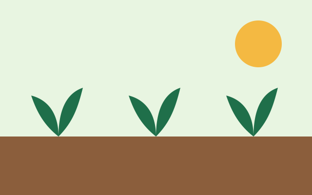

Horta Comunitária
- Meio ambiente
- Vagas abertas
Produção de hortaliças orgânicas distribuídas gratuitamente às famílias cadastradas, com oficinas de alimentação saudável.
Informações
- Público
- Famílias do Jardim Esperança
- Frequência
- Mutirões aos sábados
- Início